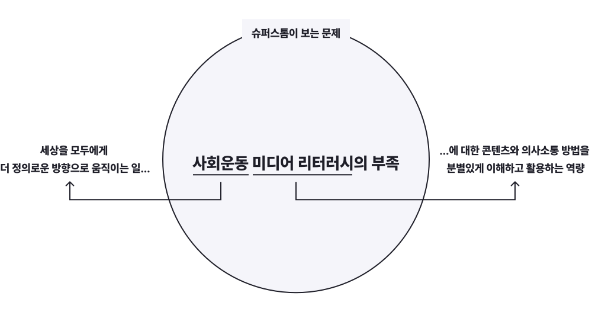

세상 돌아가는 꼴이 갑갑한가요? 잘 오셨습니다!
슈퍼스톰은 사회운동 리터러시를 키우기 위한 비영리 단체입니다.
‘너무 복잡해!’
온라인 서명과 좋아요 외에 뭘 더 할 수 있는지 모르겠어서 답답했던적 없나요? 인터넷, 스마트폰, 대중매체, 수 많은 광고들과 AI. 미디어 환경의 복잡성은 우리를 수동적으로 만듭니다.
‘너무 거대해!’
기후위기, 전쟁, 금융화 이후 더 심화된 불평등, 끊이지 않는 혐오 범죄 뉴스, 식량난, 부동산과 인구 문제. 이런 사회 문제들은 분명 내 일상과도 깊이 연결되어 있지만 너무 거대해서 무력감을 느끼게 됩니다.
‘너무 어려워!’
이런 문제들은 왜 시작되었으며, 어떻게 해결할 수 있을까요? 뛰어난 분석들이 많이 있지만 솔직히 때로는 너무 어렵습니다. 공연히 입을 열었다가는 나의 무지함을 비난받을지 모르니 한 발 물러서 ‘선생님’과 ‘활동가’들을 조용히 응원하게 됩니다.
슈퍼스톰은 이런 침묵을 깨부수기 위해 탄생했어요.
만약 내가 움직이기 시작 한다면 어떤 일이 생길까?
나의 삶, 나의 관점에서 누구나 자신의 입장을 가지고 사회 문제에 참여해 변화를 만들 수 있습니다. 다만 이는 혼자서는 할 수 없습니다. 나의 경험을 우리의 경험으로 전환해 공동의 관점으로 억압요소를 발견하고 이에 저항하는 액션을 함께 할 동료들이 필요합니다. 슈퍼스톰은 이런 모임을 만들고 지식을 축적하려 합니다.
- 지식은 함께 만들고 함께 누린다
- 문제를 함께 바라보며 관점을 전환한다
- 엄숙주의를 경계하고 실패와 실수를 용인한다
- 억압자로서의 자신을 인지한다
- 피억압자로서의 우리를 발견한다
- 활동과 후원의 주체를 구분짓지 않는다
- 응원과 소비대신 대화와 연대의 관계를 맺는다
침묵을 깨는 사회운동 커뮤니케이션 전략 실험
분별있게 미디어를 이해하고 활용하는 미디어 리터러시 역량은 두말할 것 없이 중요합니다. 하지만 이 문제는 충분히 다뤄지고 있지 않습니다. 사회운동에 대해서는 더욱 그렇지요. 쇼핑이나 돈벌이를 위한 SNS 활용 노하우는 넘쳐나지만 SNS에서 정치와 사회 이슈 관련 정보를 어떻게 읽고, 이야기 해야 하는지에 대한 정보는 거의 없습니다.
우리가 사회운동 리터러시 문제에서부터 시작하는 이유는 단순합니다.
- 모두가 온라인에서 영향력을 발휘하고 콘텐츠를 만들어낼 수 있는 시대,
- 미디어는 우리가 우리를 변화시키기 위한 필수적인 도구인데,
- 나의 힘을 세상을 바꾸는 힘으로 연결시키는 방법에 대한 논의는 너무 부족하기 때문입니다.
궁금한 분, 답답한 분, 근질근질한 분! 모두 여기여기 붙어라
MEET→ORGANIZE
동료를 발견하고 서로의 기반이 될 준비하기
회비를 통해 서로의 기반이 되어줄 지속가능하고 투명한 재정 구조를 만들어갑니다. 회원은 누구나 슈퍼스톰의 지식에 접근할 수 있습니다.
ACT→CHANGE
모이고, 나누고, 행동해서 변화 만들기
‘나의 힘을 세상을 바꾸는 힘으로’ 전환하는 데 필요한 자원을 나누는 워크숍을 엽니다. 워크숍에는 비회원 포함 누구나 참여할 수 있으며, 함께 사회운동 액션을 실천하게 됩니다.
ARCHIVE→INVENTORY
배움은 기록하고 축적하여 서로를 위한 지식으로
워크숍에서 함께 만든 배움과 도구들은 회원들에게 온라인으로 제공합니다. 초기 재정 마련을 위해 정보 접근권을 회원에 한정하고 비회원들에게는 소책자의 형태로 판매합니다.
SUPERSTORM
실체를 갖추고 슈퍼스톰 일으키기
이 구조가 안정적으로 작동하기 시작하면 자료 일부 개방하고, 사무국 체제에서 회원 공동 운영 체제로 점차 전환해나가고자 합니다. 다음 계획은 2026년 6월(예정)에 열릴 창립총회에서 결정합니다.
지금 슈퍼스톰과 함께하면 이 모든 과정을 함께 경험하고 배울 수 있습니다. 앞으로 일어날 모든 일들에 가장 먼저 함께하고 싶다면 정기후원을 통해 회원이 되어주세요!